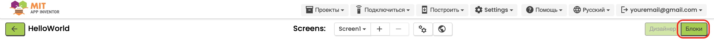

Проект "Мурлыкающий котёнок"
Цель: Создать простое интерактивное приложение, в котором при касании изображения котёнка будет воспроизводиться звук мурчания.
Этот проект научит вас работать с изображениями, звуками и обрабатывать события касания на экране. Идеально подходит для начинающих пользователей MIT App Inventor.
Чему вы научитесь:
- Добавлять и настраивать изображения
- Работать со звуковыми файлами
- Обрабатывать события касания
- Создавать простые интерактивные приложения
1
Подготовка ресурсов
2
Создание интерфейса
3
Программирование
4
Тестирование
Шаг 1: Подготовка ресурсов
- Откройте MIT App Inventor и создайте новый проект с названием "PurringKitten".
-
Для этого проекта нам понадобятся два ресурса:
- Изображение котёнка - привлекательное изображение котёнка для главного экрана
- Звук мурчания - аудиофайл с мурчанием котёнка
-
Скачайте необходимые ресурсы из нашего
центра загрузок
в разделе "Ресурсы и материалы".
- Найдите и скачайте ZIP-архив "kitten_resources.zip", в котором содержатся все необходимые файлы для проекта
- Распакуйте архив - внутри вы найдёте файл изображения "kitten.png" и звуковой файл "purr.mp3"
- Теперь эти файлы готовы для загрузки в ваш проект MIT App Inventor
-
Загрузите скачанные файлы в ваш проект MIT App Inventor:
- В правой панели "Media" (Медиа) нажмите кнопку "Upload File..." (Загрузить файл...)
- Выберите и загрузите сначала файл "kitten.png"
- Повторите процесс для файла "purr.mp3"
- После загрузки вы увидите оба файла в списке медиа-ресурсов вашего проекта.


Совет: Если у вас нет возможности скачать
ресурсы, вы можете использовать любое подходящее изображение
котёнка и звук мурчания. Просто убедитесь, что изображение имеет
формат .png или .jpg, а звук - формат .mp3 или .wav.
Важно: Убедитесь, что имена загруженных файлов
совпадают с именами, которые будут использоваться в проекте
(kitten.png и purr.mp3). Если имена файлов отличаются, вам нужно
будет соответствующим образом изменить их в блоках
программирования.
Шаг 2: Создание интерфейса приложения
-
Создадим простой и привлекательный интерфейс для нашего
приложения. Начнем с основного контейнера:
- В разделе Layout (Макет) найдите компонент VerticalArrangement
- Перетащите его на экран приложения
- В свойствах установите Width (Ширина) и Height (Высота): Fill parent
- В BackgroundColor выберите приятный светлый цвет (например, светло-голубой или светло-розовый)
- Установите AlignHorizontal и AlignVertical в значение Center (по центру)
-
Добавим заголовок приложения:
- Из раздела User Interface перетащите компонент Label в VerticalArrangement1
- В свойствах установите Text: "Погладь котёнка!"
- Установите TextColor: контрастный цвет (например, тёмно-синий)
- Установите FontSize: 22 и FontBold: True
- Установите Width: Fill parent и TextAlignment: Center
-
Теперь добавим изображение котёнка:
- Из раздела User Interface перетащите компонент Image в VerticalArrangement1 под заголовком
- В свойствах Picture выберите загруженный файл "kitten.png"
- Установите Width и Height: 300 пикселей (или подходящий размер)
- Убедитесь, что свойство Clickable установлено в значение True
-
Добавим невидимый компонент для воспроизведения звука:
- В разделе Media найдите компонент Sound
- Перетащите его на экран (он появится в разделе "Non-visible components")
- В свойствах Source выберите загруженный файл "purr.mp3"
- Установите MinimumInterval в значение 500 (это предотвратит слишком частое воспроизведение звука при быстрых повторных касаниях)
-
Для более привлекательного интерфейса добавим пояснительный
текст под изображением:
- Перетащите еще один компонент Label в VerticalArrangement1 под изображением
- В свойствах установите Text: "Коснись котёнка, чтобы услышать мурчание"
- Установите FontSize: 16 и TextColor: серый цвет
- Установите Width: Fill parent и TextAlignment: Center


Совет по дизайну: Для более приятного визуального
эффекта вы можете добавить небольшие отступы между элементами,
настраивая свойство Margin для каждого
компонента. Также можно добавить компонент
HorizontalArrangement с невидимым фоном для
создания дополнительного пространства между элементами.
Шаг 3: Программирование интерактивности
- Перейдите во вкладку Blocks (Блоки) для программирования логики приложения. 
-
Программирование реакции на касание изображения котёнка:
- В левой панели найдите компонент Image1 (ваше изображение котёнка)
- Выберите блок when Image1.Click - это событие, которое будет происходить при касании изображения
- Перетащите этот блок в рабочую область
-
Добавление анимации при касании:
- В категории Image1 найдите блок call Image1.Bounce
- Перетащите этот блок внутрь блока when Image1.Click
- В параметр duration введите значение 500 (миллисекунд) - это будет мягкая короткая анимация
-
Воспроизведение звука мурчания:
- В левой панели найдите компонент Sound1
- Выберите блок call Sound1.Play
- Перетащите этот блок внутрь блока when Image1.Click под блоком анимации
-
Дополнительно добавим инициализацию при запуске приложения:
- В левой панели найдите компонент Screen1
- Выберите блок when Screen1.Initialize
- Перетащите этот блок в рабочую область
- В категории Sound1 найдите блок set Sound1.Source to
- Перетащите этот блок внутрь блока when Screen1.Initialize
- В поле значения введите текст "purr.mp3" или выберите соответствующий ресурс


Совет по улучшению: Вы можете сделать приложение
еще более интерактивным, добавив несколько разных звуков и
случайный выбор между ними при каждом касании. Для этого создайте
список звуков и используйте блок
random integer для выбора случайного звука из
списка.
Важно! Если вы используете звук с другим именем
файла, убедитесь, что указали правильное имя в блоке
set Sound1.Source to. Также убедитесь, что
свойство Clickable для изображения установлено в
значение True, иначе обработчик Click не будет работать.
Шаг 4: Тестирование приложения
-
Протестируйте ваше приложение:
Чтобы проверить работу приложения "Мурлыкающий котёнок", воспользуйтесь одним из способов тестирования, описанных в нашем введении в MIT App Inventor:- Подключите реальное Android-устройство через Wi-Fi или USB
- Используйте эмулятор
- Создайте APK-файл и установите его на устройство
-
Как проверить работу приложения:
- Запустите приложение на устройстве или эмуляторе
- Убедитесь, что изображение котёнка отображается корректно
- Коснитесь изображения котёнка
- Проверьте, что происходит анимация (лёгкое подпрыгивание изображения)
- Убедитесь, что воспроизводится звук мурчания
- Проверьте, работает ли приложение при повторных касаниях

Совет по отладке: Если звук не воспроизводится,
проверьте следующее:
- Убедитесь, что звук правильно загружен в проект
- Проверьте, что имя файла в блоке set Sound1.Source to точно соответствует имени загруженного файла
- Убедитесь, что на устройстве включен звук и установлена достаточная громкость
Поздравляем! Вы успешно создали приложение
"Мурлыкающий котёнок"! Это простое, но интерактивное приложение
демонстрирует основные принципы работы с изображениями, звуками и
обработкой пользовательских действий в MIT App Inventor. Теперь вы
можете расширить его, добавив больше функций или создать
собственное приложение на основе полученных знаний.
Скачать проект
Если у вас возникли сложности, вы можете скачать готовый файл проекта в нашем центре загрузок:
Перейти в центр загрузок